Data Link Layer
Introduction
关键词：传输TLP，Ack/Nack，流控，电源管理
当事务层将事务消息准备好之后，就会向下传递给数据链路层（Data Link Layer）。对于我们发送的事务消息来说，数据链路层主要负责一件事情：保证事务消息能正确的传输到目的地。
数据链路层传输的包主要包括两种，一种用于传输TLP事务消息，一种用于传输数据链路层的控制消息，比如功能（Feature）控制，流量控制，电源管理ack/nack机制等等。这两种类型的包通过物理层的Token来进行区分：STP（Start of TLP）表示TLP消息，SDP（Start of DLLP）表示控制消息（DLLP，Data Link Layer Packet）。
问题：流量控制是为Transaction layer 服务的，为什么不在TLP中交换信息？因为在TLP中可能出现死锁。buffer满了，不能继续传输TLP了。对方也不知道满了，还在继续传输。
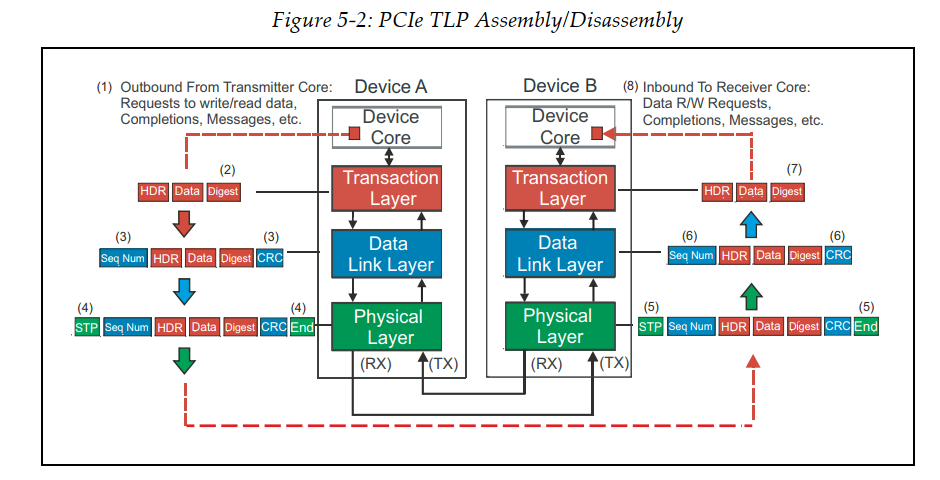
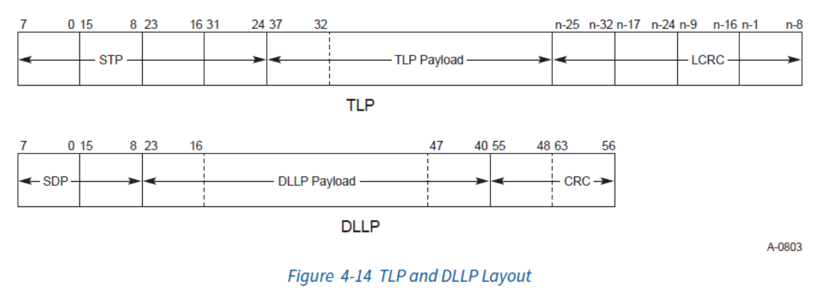
传输TLP
为了达到这个目的，数据链路层会对数据包再进行一层封装：
- 在包的前方添加一个序列号（Sequence Number），占用2个字节，用于保证包发送的顺序。这个序列号是每个Link独立的，只有上下游两端保存的序列号（
NEXT_RCV_SEQ）一致，才会被对端接收。 - 在包的后方添加一个CRC校验码，叫做LCRC（Link CRC），占用4个字节，用于保证包中数据的正确性。注意，计算CRC的时候，刚刚添加的序列号也会被纳入计算范围中。
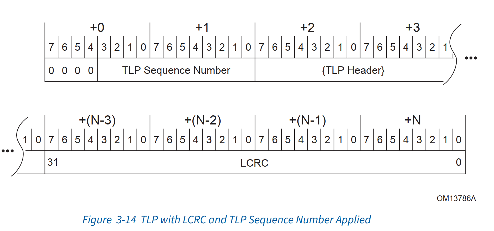
数据发送
封装完成后，为了保证成功的发送，数据链路层会先将包保存在Retry Buffer中，再转交给物理层（Physical Layer）进行发送。在每条消息发送完毕之后，发送方会等待接收方发送ACK消息，如果接收到的返回消息是失败消息，比如Seq错误，CRC校验错误，或者任何物理层的错误，发送方就会把Retry Buffer中的消息拿出来重新发送。
数据接收
对于数据的接收方，操作流程则相反。接收方会检查接收到的数据包的序列号和CRC是否正确，如果不正确，就会发送一个Nak消息，要求发送方进行重传。如果正确，就会回发一个Ack消息，表示接收成功，而此时发送方在收到了ACK消息后也可以将其从Retry Buffer中移除。这样，数据链路层就保证了TLP的正确传输。
传输DLLP
除了传输TLP数据包之外，数据链路层还需要很多专门用于控制的数据包，比如上面提到的Ack和Nak，这些数据包叫做DLLP（Data Link Layer Packet）。其大小为8B，DLLP层组装6B，还有2B是在物理层，逻辑子层组装(gen1&2 加SDP和end，gen3只加一个2B的SDP)，包括物理层的帧头和帧尾，或者说，站在协议分析仪的角度，他就是8B。
其格式如下：
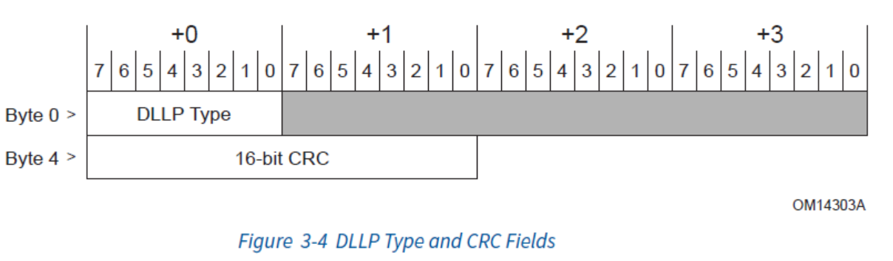
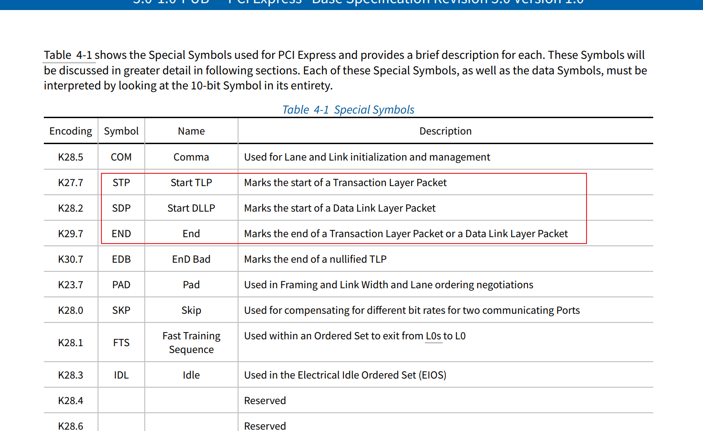
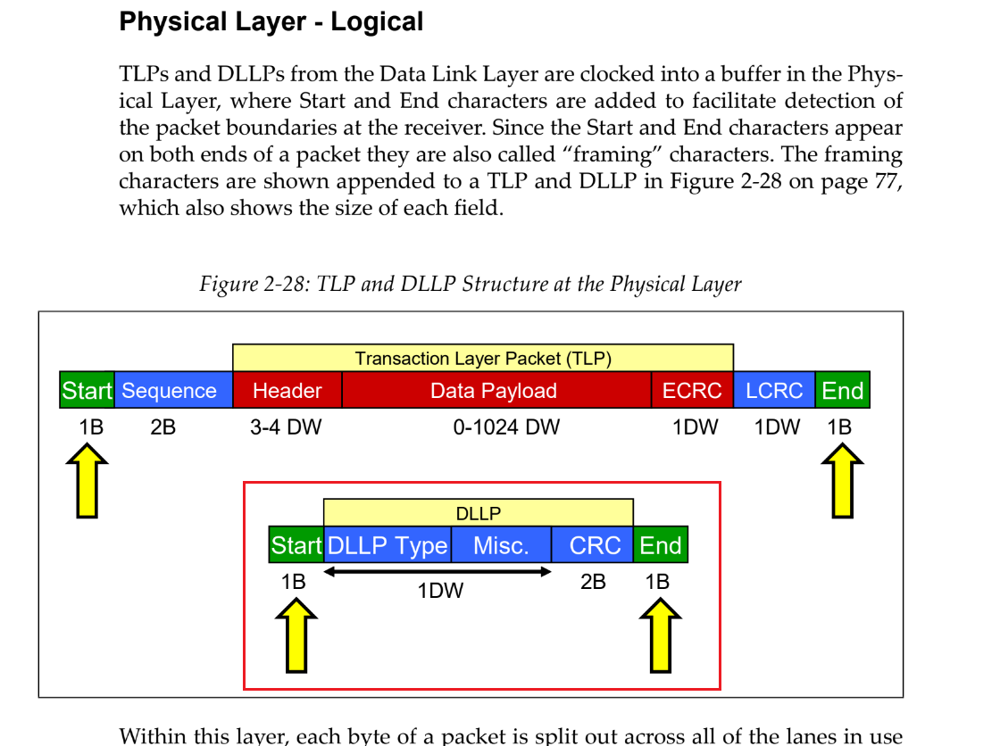
另外，传输TLP时候，在DLL层加的CRC是32bit，但是传世DLLP时候加的CRC是16bit。
DLLP中DLLP Type用来指定包的类型，而最后16位的CRC用来做校验，其主要分为以下几种类型：
| 名称 | Type | 描述 |
|---|---|---|
| Ack | 00000000b | 用于确认接收到的TLP数据包 |
| Nak | 00010000 | 用于拒绝接收到的TLP数据包 |
| <InitFC1/InitFC2/UpdateFC>-<P/NP/Cpl> | （Type较多，后面来说） | 用于流量控制，P/NP/Cpl表示流控类型 |
| MRInitFC1/MRInitFC2/MRUpdateFC | <0111/1111/1011>0xxxb | 用于流量控制，P/NP/Cpl表示流控类型 |
| PM_* | 00100xxxb | 用于电源管理，告知对端当前的电源状态 |
| NOP | 00110001b | 用于保持链路活跃，防止链路被关闭 |
| Data_Link_Feature | 00000010b | 用于告知对端当前链路的特性，如支持Scaled Flow Control |
| Vendor-specific | 00110000b | 用于支持厂商自定义的DLLP，实现厂商特有功能 |
Ack/Nak
我们在TLP事务消息传输的里就提到过Ack和Nak消息，它们可以说是DLLP中最常用的消息了。功能顾名思义，Ack表示接收成功，Nak表示接收失败，需要重传。这两个包的格式如下：
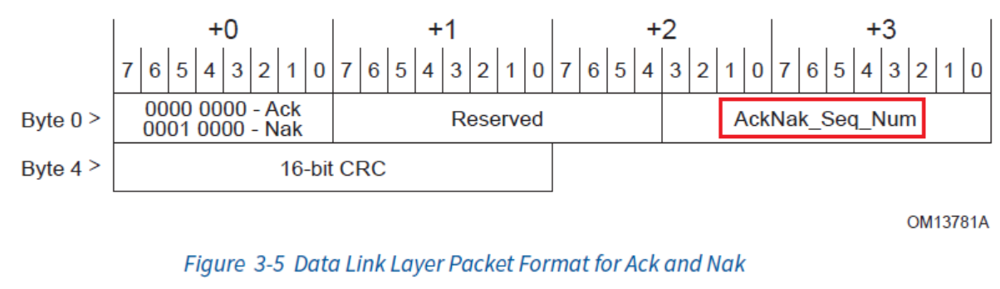
其中，AckNak_Seq_Num表示当前已经收到的最新的消息序号，所以和TCP类似，PCIe的Ack和Nak可以进行批量操作：无论是Ack还是Nak，当发送方收到这个消息之后，就可以将Retry Buffer中比这个序号老的消息全部移除了，所以Ack/Nak时只需要将最新的序号带上即可。Ack/Nak的差别在于：如果是Nak，那么发送方在移除之后，需要对Retry Buffer中这个序号之后的消息全部进行重传。
最后，DDLP的重传是由次数限制的，默认阈值是4次。如果超过四次，就出触发物理层开始重建（retrain）链路。如果依然失败，就会将该链路关闭。
VC（Virtual Channel）与流量控制
在说TLP的时候，我们提到了PCIe的流量控制是通过将TC（Traffic Class）映射到VC（Virtual Channel），并且利用VC的信用机制来实现的。这里我们就一起来看看这个信用机制吧！
数据链路层中的信用额度管理有两个重要的特点：
- 不同处理方式是的TLP消息有着单独的信用额度管理：Posted（P），Non-Posted（NP）和Completion（Cpl）。这三种消息的信用额度是独立的，互不影响。
- 每个VC都有着自己的独立的信用额度管理，而不是Link。也就是说，如果一个Link上有多个VC，那么每个VC都需要单独的初始化和更新。
参与流量控制的消息有很多，主要有三类，每一类有三个变种（N/NP/Cpl），我们的流量控制也主要分三步，其细节和统一的消息格式如下：
- InitFC1-P/NP/Cpl：接收端设备使用此消息向发送端发起初始化流量控制的流程，并初始化信用额度，这是第一步。这个消息有接收端发起的原因是因为，不同的接收端能力不同，所以应该由接收端根据自己的能力，比如缓存的大小，来决定信用额度的大小。
- InitFC2-P/NP/Cpl：用于发送端向接收端确认InitFC1的消息，这是第二步。这个消息中会带有从第一步接收到的信用信息，但是它会被接收端忽略，并没有什么用。另外，这个消息发送之后，发送端将不会再理会任何后续的InitFC1消息了。
- UpdateFC-P/NP/Cpl：用于在信用额度初始化完成之后，接收端向发送端对信用额度进行更新。
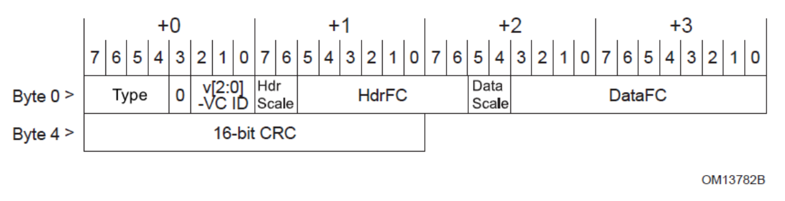
这个消息中各个字段含义如下：
-
Type：消息ID，映射如下：
Type Id InitFC1-P 0100b InitFC1-NP 0101b InitFC1-Cpl 0110b InitFC2-P 1100b InitFC2-NP 1101b InitFC2-Cpl 1110b UpdateFC-P 1000b UpdateFC-NP 1001b UpdateFC-Cpl 1010b -
VC ID（v[2:0]）：Virtual Channel的Id，Id一共有3位，代表8个VC。
-
HdrFC：TLP头部的Credit数量。在发送时，一个TLP头对应着一个Header Credit，不论该TLP的大小如何。
-
DataFC：TLP数据部分的Credit数量。一个 DW（Double Word，双字，即4字节）对应着一个Data Credit。
举个例子，我们假设有一个64位地址的内存的写请求，数据长度为128字节，那么我们会需要发送一个4 DW的TLP头，加上128字节的Payload，和一个1 DW可选的TLP Digest，所以我们一共最多消耗1个Header Credit，和 (128 + 4) / 4 = 33个Data Credit。
然后，为了保证发送方正常的消息发送，当接收方处理完部分消息后（或者一些特殊情况后），就会根据其当前缓存的大小，向发送方发送UpdateFC消息，告诉发送方，接收方的信用额度还剩下多少。另外，除了这种情况，接收方还会定时的向发送方上报自己的信用额度（最长间隔30us），这么做的原因是为了避免意外情况，如CRC校验出错，导致信用额度上报丢失，从而导致发送方停止发送消息的问题。
最后，数据链路层还支持Scaled Flow Control，即信用额度的数量可以是2的幂次方，这样就可以管理更大的信用额度了：
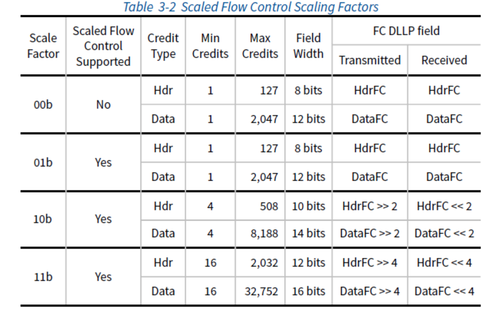
AVIP log 基于credit ，6个stack，post non-post cpl head and data
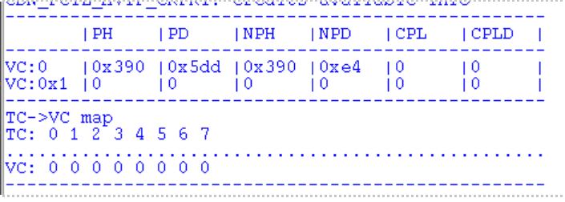
一个例子：
注意：如果查看原始的包，在计算时需要注意，HdrFC和DataFC都没有对其到字节上，所以记得做好位运算。
- 首先，PCIe的Endpoint会向Switch发送如下三条消息来进行流控初始化：
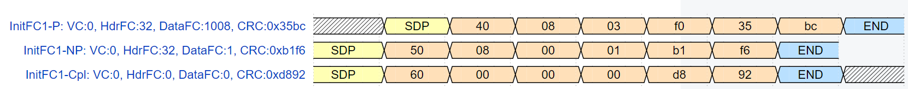
-
当Switch收到这个消息后，也会向Endpoint发送三条类似的消息，进行反向的初始化。因为流程类似，从这里开始，之后Switch向Endpoint发送的反向流程我们就忽略了。
-
Switch收到了InitFC1 DLLP后，会使用InitFC2 DLLP进行确认：
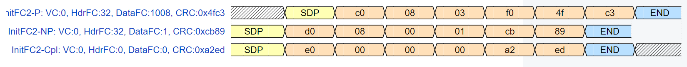
参考：Blog